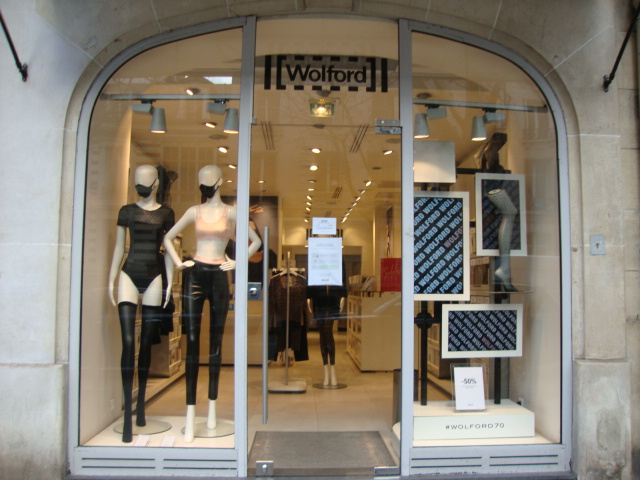

La transparence
à l'adresse juste
Collants, corps & prêt-à-porter – 140 avenue Victor Hugo. Essayages privés sur rendez-vous.
4.1/5 — 10 avisL'écrin Victor Hugo
Une architecture claire, des cabines pensées comme des loges, une lumière froide qui ne pardonne rien – et sublime tout. Dans le calme de l'avenue, à deux pas du Trocadéro.
Ici, l'essayage devient un luxe discret. Les murs blancs, le verre et le métal brossé composent une atmosphère de galerie d'art contemporain où chaque silhouette trouve sa juste lecture.
Conseil et précision
Une conseillère dédiée vous guide en cabine privée. Aucune pression de vente : un regard formé à la ligne, pas au chiffre.
Ourlets, ajustements, reprises délicates effectués sur place avec la précision d'un atelier de couture.
Vos collants retrouvent leur profondeur. Un bain de couleur froide, maîtrisé, pour prolonger la vie de chaque pièce.
Une analyse nette et bienveillante pour identifier les coupes, les matières et les constructions qui servent votre ligne.
Les pièces de cabine
Une édition resserrée, renouvelée chaque saison. Non pas un inventaire, mais ce que l'on aime voir porté : la robe drappée Icon, le body transparent Pure, les bas autofixants en mérinos.
Chaque pièce est sélectionnée pour sa tenue, sa transparence maîtrisée et sa capacité à devenir une seconde peau – sans couture, sans compromis.
La sélection complète se découvre en boutique. Prenez rendez-vous pour un essayage privé.
Venir
140 Avenue Victor Hugo
75016 Paris
France
Station de métro Victor Hugo (ligne 2).
Parking public à 80 m.
Entrée sur rue, niveau trottoir.
Mardi – Samedi
10h – 19h
Dimanche et lundi fermés.
Jours fériés : horaires à confirmer.
Un essayage privé
Réservez votre créneau pour une heure de conseil exclusif, seule ou accompagnée. La cabine vous attend, la lumière est réglée, le silence de l'avenue fait le reste.
01 55 73 01 02
ou
service.france@wolford.com
Téléphonez également au 07 88 66 09 54 pour une réservation directe avec l'équipe de la boutique.
Depuis 1950
Une histoire de fils, de mailles et d'émancipation. Nos collants sont tricotés en Europe, nos finitions sont sans couture. La boutique Victor Hugo est l'une de nos adresses historiques à Paris.
Chaque pièce Wolford incarne une promesse de netteté : la maille ne se relâche pas, la transparence ne triche pas, la coupe ne pardonne que l'essentiel. Depuis plus de soixante-dix ans, nous habillons les jambes et les corps avec la même exigence architecturale.